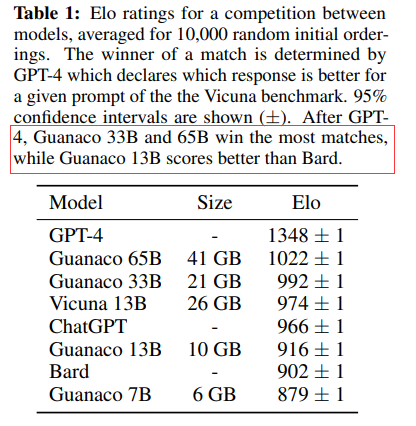
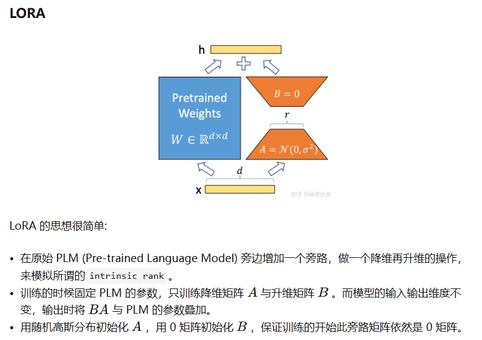
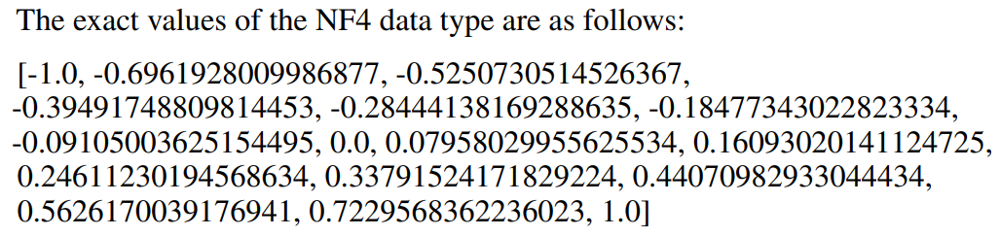
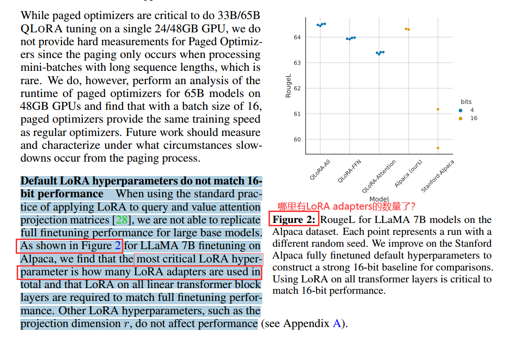
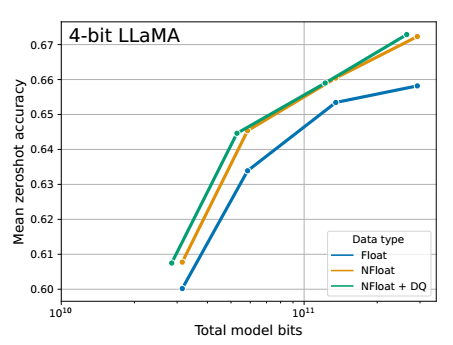

QLoRA论文笔记
QLORA: Efficient Finetuning of Quantized LLMs
0.摘要
QLoRA是一个有效的finetune方法，极大程度上减少了微调模型需要的GPU显存，并且能维持16bit finetuning下的表现。
LoRA——Low Rank Adapters
QLoRA 通过一个冻结的4-bit量化预训练模型反向传播梯度
创新点：
- 4-bit NormalFloat
- 对于distributed weights理论上数据类型最优
- 双重量化（Double quantization ）
- Page Optimizers
效果：
- 非常好，在小型的高质量数据集微调，可以达到SOTA结果，甚至在小模型上比SOTA好
- Guanaco，超过了所有开源模型（Vicuna benchmark），达到了ChatGPT 99.3%的performance，却只用24小时单GPU微调【Vicuna benchmark具体是啥】
也显示GPT-4的评估是一个成本低且合理的选择（相对于人类评估）
current chatbot benchmarks are not trustworthy to accurately evaluate the performance levels of chatbots?
1.Introduction
首次微调quantized 4-bit model 且没有任何性能损失（可以恢复到16bit）


因为我们大大减少了fintune的成本，所以可以微调不同parameter size和architecture的model做实验。
训练了超过1000个模型，不同的instruct tuning数据集、模型架构和模型参数size（65B-80M）
- 对于用来instruct tuning的数据集，数据质量(data quality)/数据集适用性(dataset suitability)比数据集大小(dataset size)更重要。
发布了所有模型，开源，且整合方法到Hugging Face transformers stack
2.Background
2.1 Lora（low ranked Adaptation）【diffusion model里常用的那个】
灵感来自于一篇讨论intrinsic dimension的论文: Intrinsic Dimensionality Explains the Effectiveness of Language Model Fine-Tuning
intrinsic dimension：在一定精度水平上解决特定目标的优化问题所需的最小维度。
处理一个细分的小任务时，是不需要那么复杂的大模型的，可能只需要在某个子空间范围内就可以解决，那么也就不需要对全量参数进行优化了，现实中我们难以精确找到某个问题所对应的子空间，但是我们可以定义当对某个子空间参数进行优化时，能够达到全量参数优化的性能的一定水平（如90%精度）时，那么这个子空间所对应的维度就可以称为对应当前待解决问题的Intrinsic Dimension。
论文中的结论：
- 预训练隐式地降低了Intrinsic Dimension
- 大模型在经过一定次数训练后，倾向于有着更低的Intrinsic Dimension
- 越简单的下游任务，有着越低的Intrinsic Dimension
- 越低的Intrinsic Dimension，有着越好的泛化性能
上面的论文讲，模型会有冗余参数，LoRA认为模型的权重矩阵（weights matrix）有冗余的秩
可以用矩阵分解把A*B大小的矩阵分解成A*r × r*B
对于权重矩阵\(W_0\in R^{d\times k}\)，更新梯度时有\(W_0' = W_0 + \Delta W = W_0 + BA,B\in \mathbb{R^{d\times r}},A\in \mathbb{R^{r \times k}}\) r远小于min(d,k)，是超参数


实际上r取1,2,4,8这种非常小的数就可以。
2.2 4-bit NormalFloat Quantization
一般的Quantization（量化）
- 分为对称量化(scale quantization)和非对称量化(affine quantization)
- 对称量化的实数0也对应着整数的0，而非对称量化的实数0不一定对应着整数0，而是z。
- 对称量化实数的范围是对称的\([-\alpha,\alpha]\)，而非对称量化的则不对称\([-\beta,\alpha]\)
- 对称量化整数的范围是对称的（[-127,127]），而非对称量化的则不对称（[-128,127]）【对于INT8量化】
- 非对称量化
- 需要被量化的tensor内数的范围为\([-\beta,\alpha]\)，需要量化到b bits
- \(s = \frac{2^b-1}{\alpha - \beta}\)
- \(f(x) = s·x + z,\,z = -round (\beta·s)-2^{b-1}\)，之后还要对f(x)进行round + clip操作
- 对称量化
- 需要被量化的tensor内数的范围为\([-\alpha,\alpha]\)，需要量化到b bits
- \(s = \frac{2^{b-1}-1}{\alpha}\)
- $f(x) = s·x $，之后还要对f(x)进行round + clip操作
Block-wise Quantization
- 一些outlier会影响上述的量化过程，Block-wise对此的解决方案是一批一批的量化，每一批（block)使用独立的s
Quantile Quantization
- 充分利用仅仅16个位置(quantization bin)：把所有数字由小到大排列，再分成十六等分，最小的一块映射到量化后的第一个数，第二块映射到量化后的第二个数，以此类推。这样做原始数据在量化后的数字上分布就是均匀的。
- Quantile——分位，概率里的x分位数，我们只需要设置一个map，把float映射到0-15这16个key上。
- \(q = \frac{Q_x(\frac{i}{2^k+1})+Q_x(\frac{i+1}{2^k+1})}{2}\), QX (·) 是分位数函数，能获取数值对应的分位数，i是float32，q是i对应的k-bit量化值，这里k=4
Normal Float
- 上面QQ量化的缺点：对每一批input都需要计算16个分位数，麻烦
- 预训练的参数基本上是符合均值为0的正态分布的，因此可以直接缩放到指定的范围内，在文章中使用的是[-1, 1] 的范围。
- 把正态分布N(0, 1)按Quatile Quantization的方法找出\(2^k\)个量化值，再缩放到[-1, 1]范围，就找到了16个固定的分位数。
但这样0会被映射到不为0的数值上，损失了0的特殊性质。于是文章先在[-1,0]和[0,1]之间分别找出\(2^{k-1}\)个量化值，然后只保留一个0（作为0的映射）即可，最终的量化值如下（15个区间+1个0）
- 

Double Quantization
在block-wise quantization当中，每一个block有自己的一个常量c，这其实是个额外的负担，假如c使用float32, block大小为64，那么摊到每个参数上的额外开销就是32/64 = 0.5bit。 对于4bit量化来说额外的0.5bit相当于多12.5%的显存耗用
- 对c再进行一次量化，考虑到c一般出现outliner的概率较小，使用256作为block大小再量化一次c得到8bit的c'，改进过后每个参数的额外消耗为 8/64 + 32/256 = 0.127 bit
2.3 Page Optimizer
NVIDIA统一内存功能可以在CPU和GPU之间进行自动页对页传输，以便在GPU偶尔耗尽内存的情况下进行无错误的GPU处理。使用此功能为优化器状态(optimizer states)分配分页内存，然后当GPU内存不足时，这些状态会被自动逐出CPU RAM，并在优化器更新时(optimizer.step())中需要内存时被分页回GPU内存。
Optimizer States ： Optimizer 在进行梯度更新时所需要用到的数据，例如 SGD 中的Momentum以及使用混合精度训练时的Float32 Master Parameters
3. QLoRA vs Standard Finetune
whether QLoRA can perform as well as full-model finetuning & analyze the components of QLoRA including the impact of NormalFloat4 over standard Float4. [查看是否比得过标准finetune，以及分析不同组件的作用]
没有关于Page Optimizer的hard measurement，因为使用到这种优化的情况不多，但是我们对48GB GPUs上运行65B model进行了分析，发现batch size=16的分页优化器与常规优化器具有相同的训练速度。
【未来需要分析什么情况下使用Page Optimizer会增大训练时间】
Default LoRA hyperparameters do not match 16- bit performance 【以RougeL为评估标准】


没看懂图二，既没有单纯LoRA的performance，也没有提到LoRA adapter的数量
NF4比单纯的QQ(4 Floating Point)效果好


对RoBERTA和T5模型（size从125M到3B）用16bit和4bit进行微调，在GLUE和Super-NaturalInstructions数据集上结果没有差异
7B到65B参数范围，LLaMA模型，完全恢复了16位LoRA 在MMLU数据集上的表现。
5-shot test accuracy (没理解啥意思，只给5个样本学习，然后测试吗，还是只在5个样本上做了测试)
后面对Guanaco-65B（研究人员认为它是仅次于GPT-4的第二大模型）定性测试了各种问题，例如模型对于错误事实的分辨能力（能分辨），对于模糊问题的回答（回答错误，且很自信），是否能保守秘密（可以通过简单的trick绕开secret keeping），是否会拒绝回答问题（会，但是可能会因为一些奇怪的原因拒绝回答正常的问题，例如翻转句子），数学能力（很差，求1833因式分解分解不出来），Theory of Mind（推理能力？ 有，但有时理由不对）
ps1：Gunanco仅使用交叉熵损失(监督学习)进行微调，而不依赖于来自人类反馈的强化学习(RLHF)
ps2：GPT评估时有一些偏差（偏向于给自己打高分，偏向于给关键词出现的早的回答打高分）